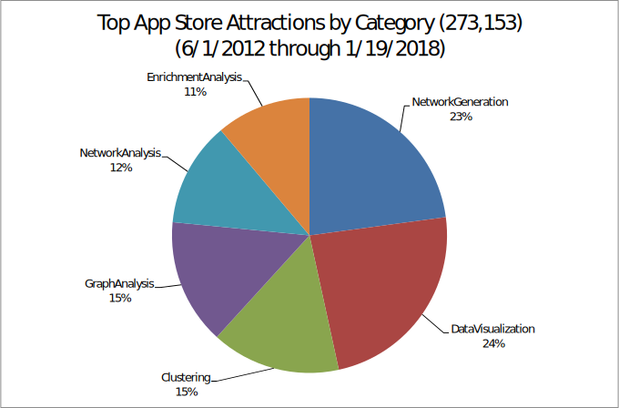

Cytoscape downloads in 2017: average 15,600 per month (512 per day)
Cytoscape downloads in 2018: average 17,600 per month (586 per day)
Downloads remain strong over time. The Apr 2016 peak had strong contribution from Cytoscape 2, and Dec 2017 and Apr 2018 are nearly as strong, but without any contribution from Cytoscape 2. Average downloads during 2017 peaked
at 19,700 in November, while 2018 peaked at 20,040 in April.
Windows 64 remains the top platform, followed by Mac (less than ⅓ of Windows 64), and grounded by Windows 32 and Linux (each about ⅙ of Windows 64). Cytoscape 2 has essentially died as of early 2017.
Weekday starts: 5,000 per day (worldwide)
Weekend and holiday starts: 1,700 per day (worldwide)
Daily startups of Cytoscape worldwide continues to increase, exceeding 5000 per day in late 2017 (as compared to about 3800 per day in 2016). Even on weekends and holidays, Cytoscape is started 1700 times per day. The spike in
November 2016 represents a long Automation job where Cytoscape is started afresh for each experiment.
Year over year visits to Cytoscape.org are increasing, and have recovered relative to the dip in the second half of 2016 (temporary suspension of AdWords). 2018 seems to be showing an increase over 2017.
Over time, the USA remains a top visitor to Cytoscape.org. However, “Other” visits more often, meaning that the entire world (outside of the top 10 visiting countries) visits more often. Compared to last year, the biggest jump in overall share is from China and India.
Counting only last year’s Cytoscape.org visitors, the USA visitorship is down 10% from the year before, while India and China visits are accelerating year-to-year.

Over time, the biggest source of Cytoscape.org visitors is Google, followed by direct address entry. Both Google/cpc (i.e., AdWords) and Baidu (India) have grown the most.
Year over year, use of Google/cpc (AdWords) has grown a lot (compared to the previous year), while many others have diminished.
Over time visits to App Store pages that are tagged by category are growing. Network and Enrichment Analysis visits are growing fastest.
While all categories increased last year, most category visits are down in 2017 relative to 2016, with Network Analysis and Generation falling the most.

App Store visits since inception continue to grow briskly, with China and India visitors growing the most. Most countries’ visitors are increasing faster than the USA.
Last year, visits by China and India increased over the previous year. Visits by other countries remained largely level or decreased.

Year to year, overall App Store visits are increasing. 2018 is starting very strong.
Visits to the App Store over time grew the most from Google/cpc (AdWords), and also grew strongly from the GeneMANIA web site and Baidu (India) search engine.
Year over year, Google/cpc (AdWords) contributed far more last year than the year before. As expected, more visitors are originating with the Cytoscape online manual. Some referral sites are diminishing significantly.

New Apps checked into the App Store continue to increase, though the pace is slowing. Cytoscape 2 plugins are no longer accepted, so their checkin rate is zero. Cytoscape 3 apps increased at about 3 per month in 2017, but has dropped significantly in the last half of 2017.
According to Google Scholar, Cytoscape is cited in nearly 209 papers per month.
According to PubMed, Cytoscape is cited in nearly 95 papers per month.
The top countries funding Cytoscape citations (over all time) hasn’t changed in the last year, but International is growing the fastest and Canada is growing the slowest.
The top countries funding Cytoscape citations (for only last year’s papers) haven’t changed. However, year-to-year, USA growth rate is down 18% and UK is down 33%.

The top 13 agencies funding Cytoscape citations (over all time) hasn’t changed much in the last year. Citations for papers funded by all agencies increased, and NINDS’ share of this pool grew the most in the last year (37%).
The top 13 agencies funding Cytoscape citations (for only last year’s papers) has changed quite a bit. NLM’s paper count is 125% of its previous year’s count. NINDS’ count is down 87% from the previous year’s count.

The top journals for Cytoscape citations over all time have been PLoS One and Sci Rep, with increases in Sci Rep and Oncotarget in the last year. All of the top journals have increased their citation counts, usually by around 10% of their total.

Over the last year, Sci Rep has greatly increased its citation count, with Oncotarget also having a strong increase. Other journals increasing their citation count gained by about 40% year over year. A number of journals slowed their citation contributions by around 20% last year.